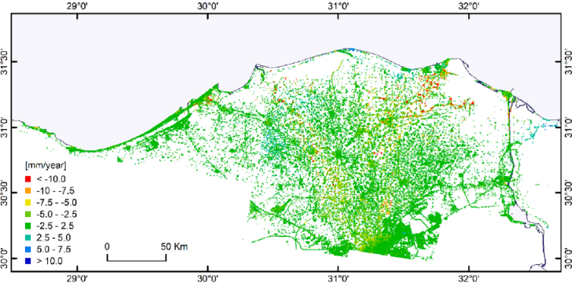
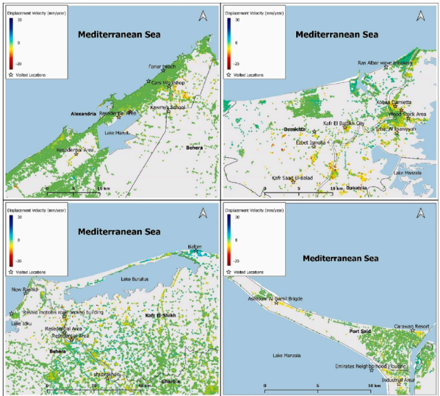
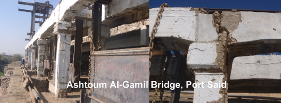
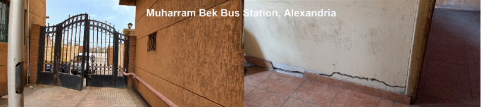
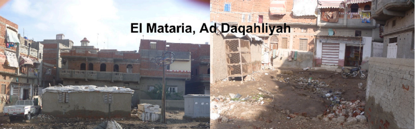

A satellite monitoring service for Egypt
See how the ground is changing beneath Egypt's cities, farmland and infrastructure — measured to the millimetre, from space.
Land subsidence is the gradual downward movement of the Earth's surface. It's difficult to see by standing on the ground — but satellite radar can detect movements of just a few millimetres a year, repeated over hundreds of passes.
The NARSS Land Subsidence Monitoring Service turns repeated Sentinel-1 satellite observations into interactive maps, deformation measurements and time-series reports — giving decision-makers a clear view of where the ground is moving, how fast, and how that changes over time.
The Nile Delta carries some of Egypt's most important assets — many of them sitting on low-lying, sediment-rich ground.
Ground movement here comes from a mix of causes: natural sediment compaction, groundwater extraction, urban development and other human activity. Earlier Sentinel-1 research in the Delta has already linked localized deformation to urban loading, groundwater abstraction and compaction.
Along the coast, subsidence and sea-level rise can act together — raising vulnerability faster than either would alone.
The study behind this service analysed
The result: the most extensive picture yet of ground movement across the Nile Delta.

Measured deformation rate, mm/year — Nile Delta, 2015–2020
Across the northern Delta, subsidence generally runs 0–7 mm per year — a slow, background rate.
But some places move much faster. Higher, localized rates were identified in parts of:
Different places move at different rates, in different directions. That's why monitoring has to work at the level of individual locations, not just the region as a whole — distinguishing broad patterns from local hotspots.
The same measurements, viewed close to the ground — Alexandria & Lake Mariout, Damietta–Dakahlia, Kafr El-Sheikh & Lake Burullus, and Port Said–Manzala.

Together, these sites span the length of the Delta coastline — from Alexandria in the west to Port Said in the east.
At locations flagged by the satellite data, engineers went to look. Where subsidence is pronounced, they found visible signs on the ground:
Satellite monitoring flags where to look. Field and engineering investigation confirms what's happening there.



Hotspot in focus
This stretch of coast combines almost every condition that makes subsidence hard to ignore:
The study recorded localized high subsidence here — and field visits confirmed visible effects at some of the affected sites.
Read this before you act on it
Satellite data measures surface deformation — it does not automatically explain what's causing it. A detected signal could point to geological conditions, sediment compaction, groundwater extraction, construction loading, or some combination of these. Confirming the cause takes ground investigation.